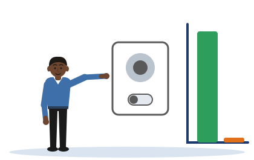

The Do-Nothing Score
[Illustrative example - do not cite] The 1,000 sign-in attempts and the four systems are invented for practice.
One idea
Before you trust a metric, ask what a system that does nothing would score on it. If doing nothing scores well, the metric is wrong.
